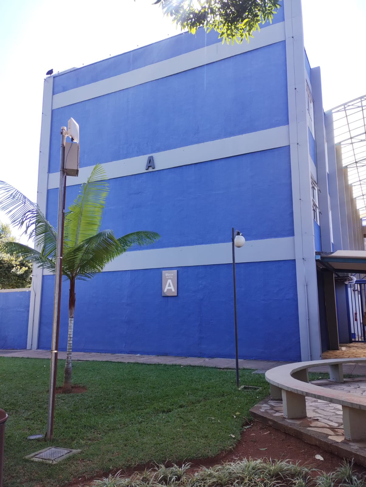

DESCRIÇÃO
O Bloco A é uma das principais estruturas do Bloco Central da Universidade Católica de Brasília (UCB), localizada no campus de Taguatinga. Ele abriga salas de aula que atendem a diferentes cursos, como Administração, Ciências Contábeis, Relações Internacionais e Educação Física. Interligado aos blocos B, C e D, o Bloco A compõe o núcleo acadêmico e administrativo da universidade. Além das atividades acadêmicas, o entorno do Bloco A oferece diversos serviços à comunidade universitária, como capela, livraria, lanchonetes, posto bancário e áreas de convivência.
SALAS E DEPARTAMENTOS
- TÉRREO: Salas A001 - A015. Sendo: A001 - CyberLab, A005 - Papelaria Mix Shop, A010 - Brigada de incêndio, A011 - SESMT, A013 - Laboratório de informática, A015 - Pastoral, além disso possui tambem a Reitoria e Capela.
- 1º ANDAR: Salas A101 - A111.
- 2° ANDAR: Salas A201 - A211. Sendo: A206 - Núcleo de serviços Academicos (NSA).